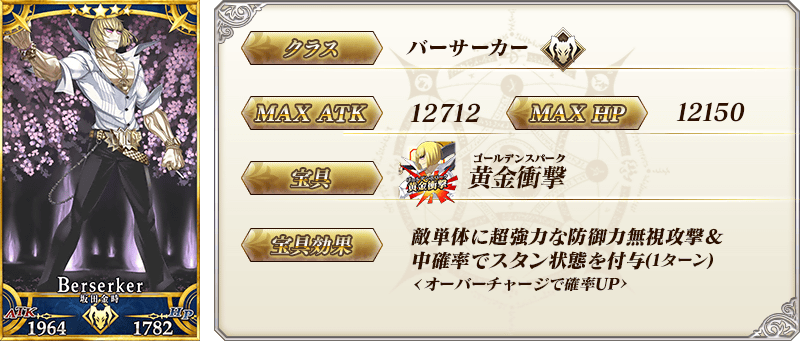
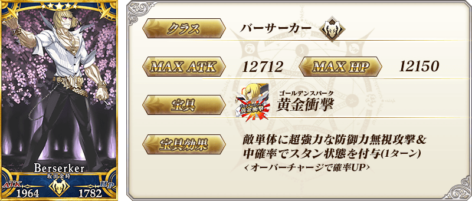
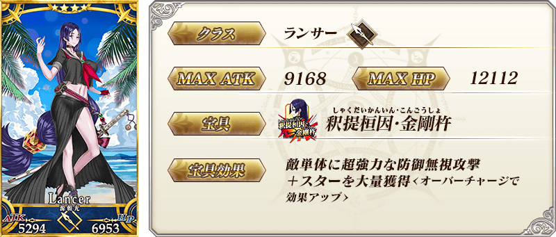

◆「京漫展2019出展記念Pick Up召喚(每日交替)」期間◆
期間:2019年9月22日(日) 14:30～10月6日(日) 11:59
為了記念至2019年9月21日(六)・9月22日(日)舉辦中「京都國際動漫展2019」的出展，舉辦「京漫展2019出展記念Pick Up召喚(每日交替)」。
本次從「京都」相關的從者之中以期間限定「★5(SSR)紫式部」「★5(SSR)坂田金時(Berserker)」以每日交替Pick Up，「★4(SR)源賴光(Lancer)」常駐Pick Up！
詳情請在聖晶石召喚畫面左下的召喚詳細確認。
◆有關從者的注意◆
※「★5(SSR)紫式部」「★5(SSR)坂田金時(Berserker)」「★4(SR)源賴光(Lancer)」在Pick Up期間結束後不會追加到故事召喚。
※請注意「京漫展2019出展記念Pick Up召喚(每日交替)」做為每日交替，「★5(SSR)紫式部」「★5(SSR)坂田金時(Berserker)」就算Pick Up期間中也會有不被抽出的日子。
Pick Up期間中，期間限定從者的出現機率提升！
11次召喚中確定1張★4(SR)以上和確定1位★3(R)以上的從者！
※確定★4(SR)以上包含從者和概念禮裝。
※本頁面皆為開發中圖片。會有與實際圖片相異的情況。
◆「京漫展2019出展記念Pick Up召喚(每日交替)」Pick Up內容◆
| Pick Up期間 | Pick Up內容 | |
|---|---|---|
| 每日交替Pick Up | 全天Pick Up | |
| 9/22(日) 15:30～ 9/24(二) 22:59 |
★5 紫式部 ★5 坂田金時(Berserker) |
★4 源賴光(Lancer) |
| 9/24(二) 23:00～ 9/27(五) 22:59 |
★5 紫式部 | ★4 源賴光(Lancer) |
| 9/27(五) 23:00～ 9/30(一) 22:59 |
★5 坂田金時(Berserker) | ★4 源賴光(Lancer) |
| 9/30(一) 23:00～ 10/6(日) 11:59 |
★5 紫式部 ★5 坂田金時(Berserker) |
★4 源賴光(Lancer) |
※請注意會以每日交替變更Pick Up的從者。


 

 ※上述「★4(SR)源賴光(Lancer)」的卡面為靈基再臨第2階段。


 ※上述「★4(SR)源賴光(Lancer)」的立繪為靈基再臨第2階段。
※上述「★4(SR)源賴光(Lancer)」的立繪為靈基再臨第2階段。
介紹「★5(SSR)紫式部」「★5(SSR)坂田金時(Berserker)」「★4(SR)源賴光(Lancer)」的寶具演出！
在「Fate/Grand Order」官方網站內的公告中，以影片公開寶具演出，敬請確認。
其他還有，「京漫展2019出展記念宣傳活動」同時舉辦！
關於詳情，請自下述橫幅確認。
■「京漫展2019出展記念宣傳活動」詳細情報